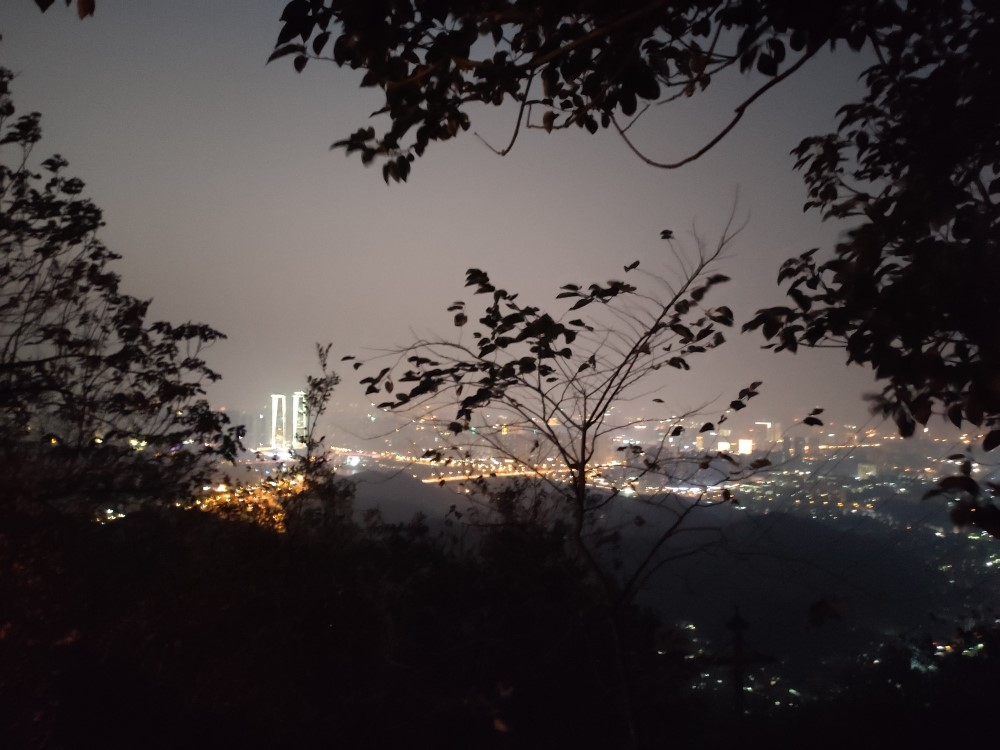
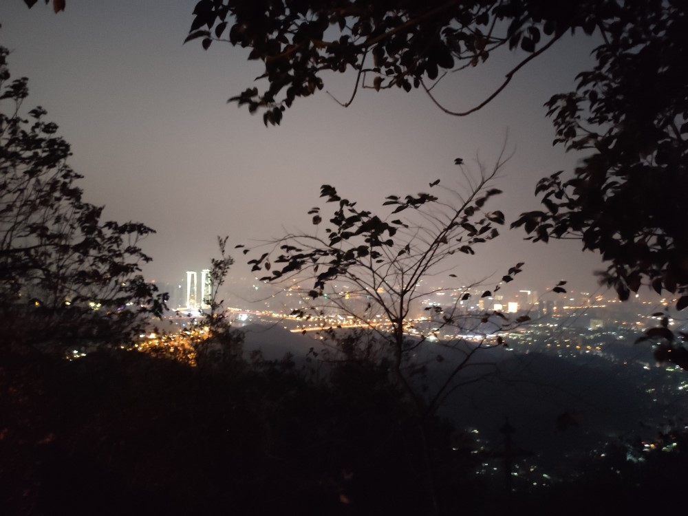

11月1日我在干嘛？我忘了哈哈哈哈哈。
11月2日下午复查了甲状腺，医生说烧过的地方吸收得挺好的，要继续加油。之后和雪静、艺婧从杭州东站出发来到千岛湖，晚上吃了烤肉、逛了超市后就睡啦。
11月3日早上十点我们登上221船，每人加了33块钱坐到了第二层豪华舱哈哈哈哈，这样就可以拥有宽敞美丽的甲板和柔软舒适的座位。我和雪静在甲板上嬉戏了半个小时。
我们这天一共游玩了三个岛：梅峰岛、渔乐岛和龙山岛。
梅峰岛主要是看千岛湖全景的，我们爬上山顶想拍个全景，但周末人有点多，太阳又有点猛，最后我只想找块阴凉空闲地躲起来哈哈哈哈，还是甲板上待待好，还能吹吹风，我这么想。
上渔乐岛已是正午，虽然带了零食作为中饭，但我和艺婧不争气的肚子还是叫了起来，一人买了一碗10块钱的泡面吃得很香。随后我们走到了坐快艇的地方，快艇开动后这深秋时节湖面上扑打脸庞的凉风让人化身九天，我和姐妹们只知道大笑，一片畅快淋漓。下了快艇后我们还是哈哈哈地大笑，甚至想再坐一次。
龙山岛是个文化岛，可我好像还是对风和水比较感兴趣，所以觉得这个岛上最有意思的是轻松惬意且拉风的游览车和3.33一支的冰糖棒冰，我和艺婧吮吸着棒冰中的甜水就感到很满足了，酸酸的足底好像也因嘴里的冰甜也得到了解放。
回岸的时候，大家都累了，甲板上只有我一个人在吹风，我在绝美的三点钟光线下照下了绝美的自己哈哈哈哈哈。湖面上的风真爽，可以把我心里的一切一切都吹走，只留下风，最后连风也不存在了。但略可惜的是这艘船没有登上月光岛的安排，听说那儿的湖上滑索很好玩。下次再来哈哈哈哈。
下船逛了景区边上的一条商业街，艺婧趁我在买绿豆糕时去给我买了一个写有我名字的糖串提前祝我生日快乐哈哈哈哈，之后我们打车去看电影，可我们想看的《天气之子》是晚上八点的，我们就先去一旁的小菜馆吃饭，可我们3个海岛女孩都对湖鱼没啥兴趣，就吃了三碗家常菜，我和艺婧还买了2杯水果茶，好久没喝果茶的我感觉果茶真是太好喝了！。
电影《天气之子》很好看，我觉得它的英文名字取得特别好《Weathering with you》，我的理解是——“不管晴雨霜雪，我都与你同在”。在千岛湖玩耍的这一天我和我的姐妹们都很开心，真是疲惫而快乐的一天！
起不来床的今日白白荒废回了杭州哈哈哈哈，早知道昨日就回杭州，白白花了一晚上住宿费哈哈哈哈，不过和姐妹们多待一会儿都很开心。
11月4日。今日是我的生辰嘻嘻，11月3日晚十一点多我刚洗完澡走出来就看到了室友们精心布置的生日快乐灯墙，元宵和小白在我前面拍手唱生日快乐歌，一波拿着相机在我身后喊一句生日快乐吓我一跳，然后大家一起随着生日快乐歌开始尬舞哈哈哈哈哈哈。
早上待在寝室，午觉过后看到了室友放在桌上的生日礼物嘻嘻，下午组织进行党支部活动——同蔡际令老师进行交流,他是一位非常热爱生活的老党员。晚上和室友们去学习旁边的南山南餐厅吃了晚饭。
11月5日，乘了两个小时的公交去见了从北京来浙大附中丁兰校区教育实习的雨薇，雨薇讲得最多的还是他弟弟，好可爱哈哈哈，一起吃了中饭然后我又赶回了玉泉写我的课程论文。
11月6日，含着眼泪在元昭的监督下把课程论文写完了呜呜。晚上去杭州站乘绿皮。
11月7日中午到了长沙，下午去了橘子洲头，晚上去了太平街和杜甫江阁。
因为是一个人都没法拍好看的照片，晚上瞎来一张。
11月8日，中午去了湖南省博物馆、非常值得一去，马王堆出土的辛追夫人遗体及文物都安放在此。还很幸运地看到了何山画家的画展，原来真实的画展这么惊艳。
下午四点到达岳麓山景区。枫叶还没红呜呜呜，来得太晚缆车滑道都坐不了哭哭。放一张岳麓山上的远景。晚上还买了一支可爱的草叶小黄鸟。
 


这三天喝了好多的茶呀，茶很好看，但我好像不太喜欢奶茶耶，还是喝喝果茶吧。